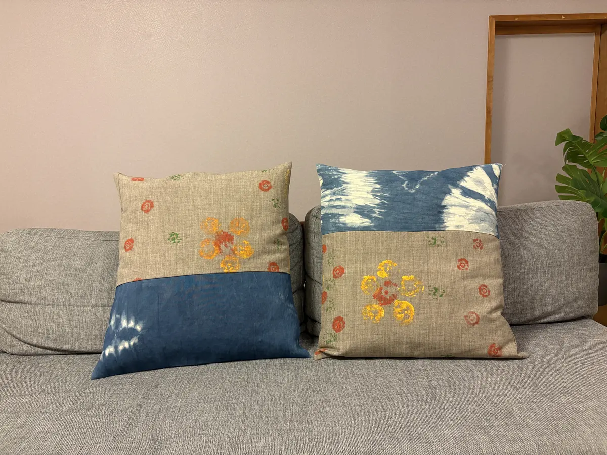
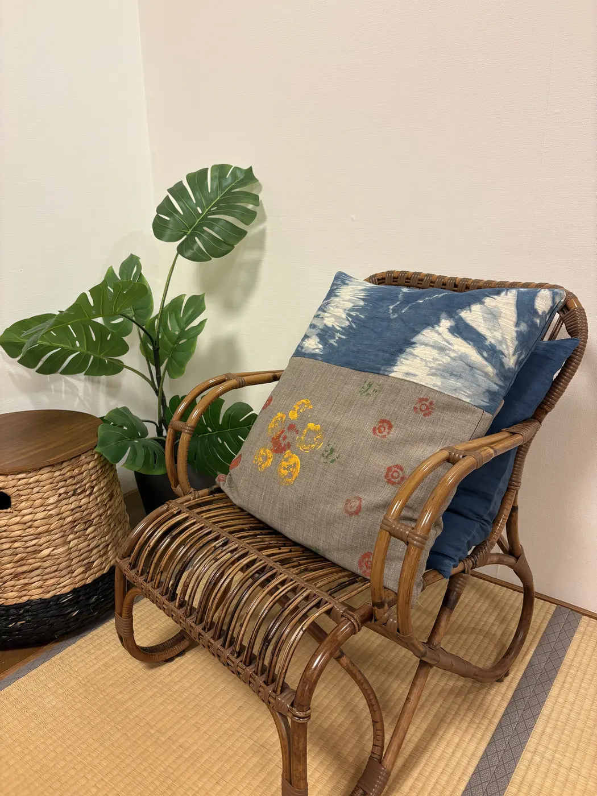
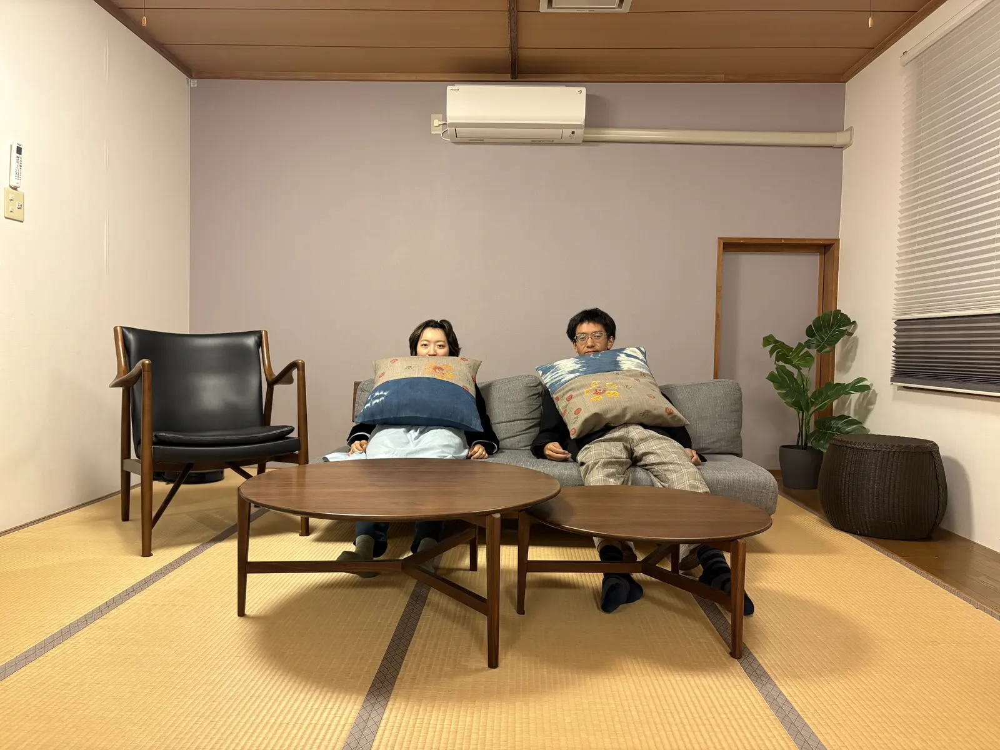
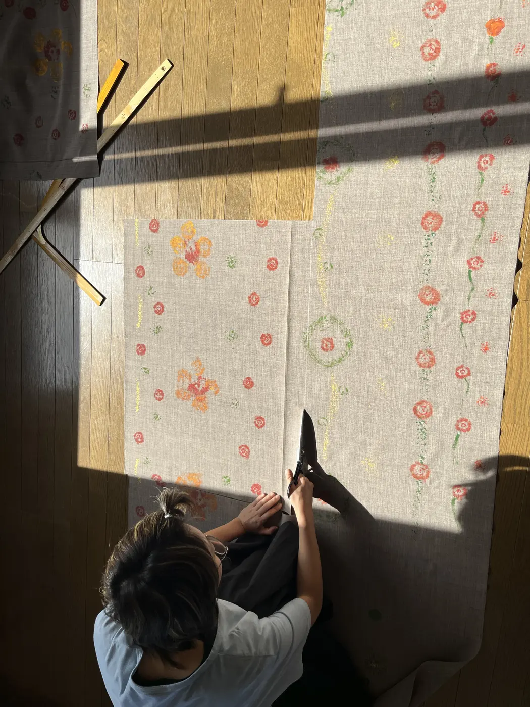
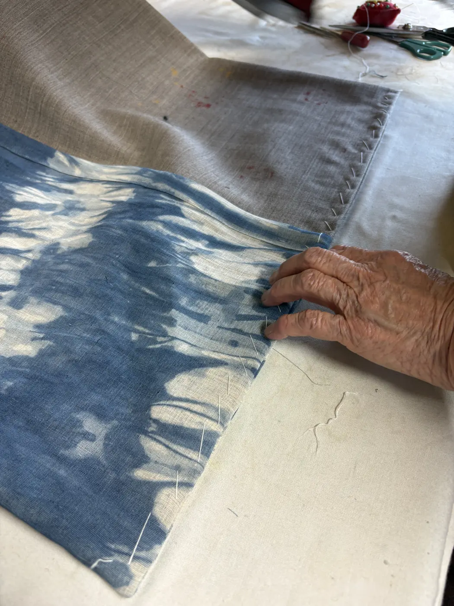

おは奈座布団 釧路
釧路の市花である金蓮花と秋の野菜や木の実を図案にした座布団です。草花拓と染めた布をつなぎ、釧路の海や空の色と季節の形を重ねました。

- Year
- 2025年
- Place
- 釧路
- Materials / Method
- 布、カラムシ染、草花拓
What I tried
草花拓の強い面を中央へ集めず、余白が残るように配置しました。藍色の濃淡が布の継ぎ目をまたいで続くよう裁断し、使ったときにゆっくり沈む中材を選んでいます。眺める図案と、身体を預ける道具の両方として調整しました。



